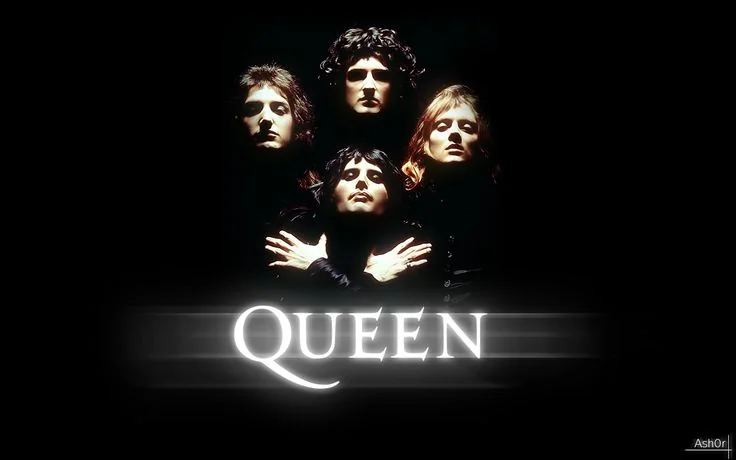

Bohemian Rhapsody
Released in 1975 from A Night At The Opera. Written by Freddie Mercury and known for its unique combination of rock, opera, and ballad elements.
Music Experience
Explore a searchable Queen song library, play official media without leaving the website, and open a concise story for every song listed here.

Essential Song
Experience Queen's legendary performances through their most recognized songs.
Released in 1975 from A Night At The Opera. Written by Freddie Mercury and known for its unique combination of rock, opera, and ballad elements.
Albums
Discover the albums that shaped Queen's musical journey.
Explore Songs
Search Queen songs and uncover the story behind every masterpiece.
Search by song, album, year, or songwriter. Discover the story behind every Queen masterpiece and listen through Spotify.
Continue Exploring
Open the media archive for band photography, album artwork, and embedded video highlights.
View Media Archive